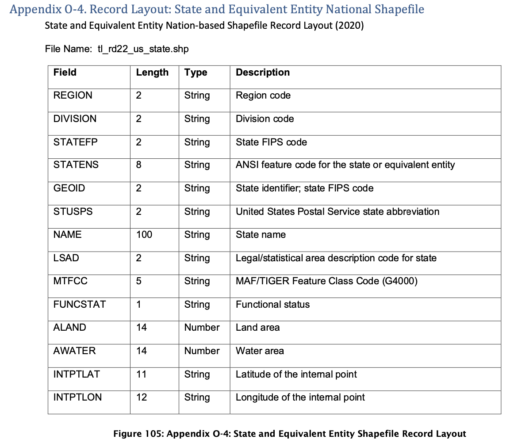
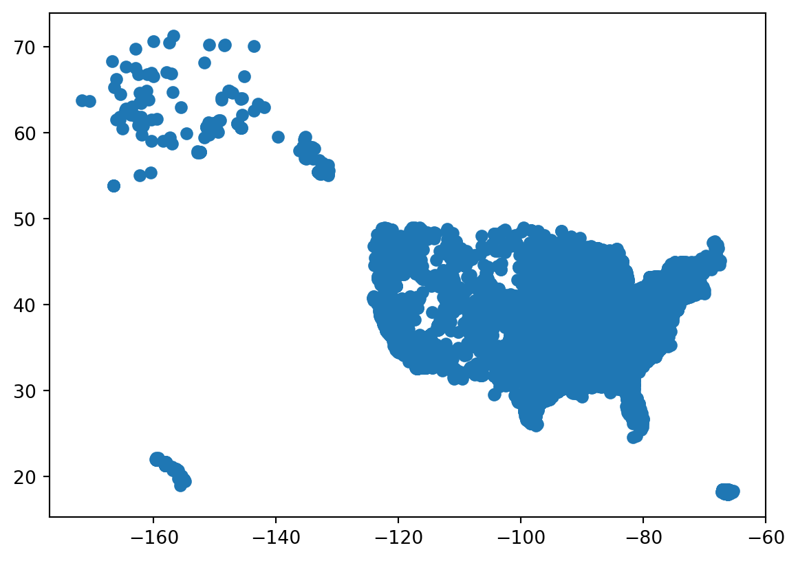
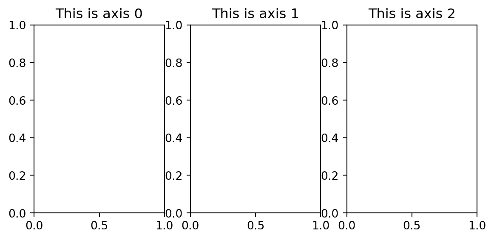
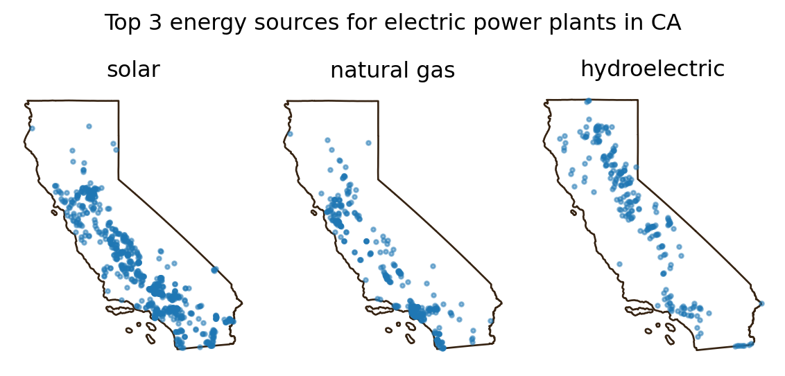
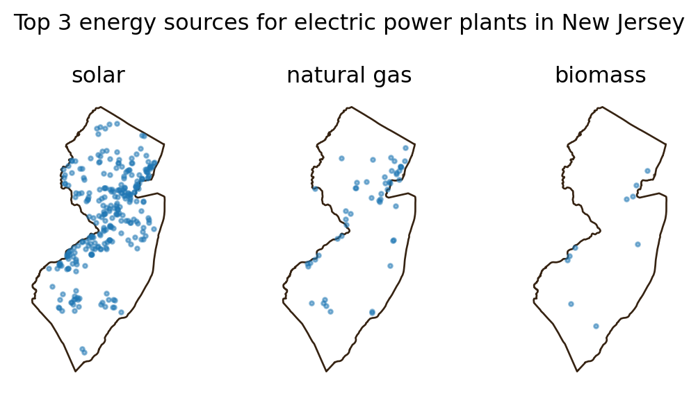

import os
import pandas as pd
from pandas.api.types import is_string_dtype, is_numeric_dtype
import geopandas as gpd
import matplotlib.pyplot as plt
# Display all columns when looking at dataframes
pd.set_option("display.max.columns", None)10 Streamline your code
In this lesson we will learn how to extract geospatial data from a CSV to create a geopandas.GeoDataFrame, introduce more customizations for maps and matplotlib figures, and go over strategies to streamline our code.
About the data
The U.S. energy landscape relies on a mix of fossil fuels and renewables, each with unique environmental and economic impacts. As the nation works toward sustainability and energy security, understanding this energy mix is essential for informed policy and progress toward cleaner energy.
In this lesson, we will use data from the U.S. Energy Information Administration (EIA) about operable electric generating plants in the United States by energy source, as of May 2023. The dataset includes information on plant types and energy sources, offering insights into the diversity of power sources—from fossil fuels to renewables—that supply electricity nationwide. The dataset’s metadata can be accessed here The EIA data on electric plants has been downloaded as a CSV and reprojected into the EPSG:4269 CRS for this lesson. It can be accessed here.
Additionally, we will use a TIGER shapefile of the US states from the United States Census Bureau. TIGER stands for Topologically Integrated Geographic Encoding and Referencing. This used to be the data format the US Census distributed geospatial data, but since 2008 TIGER files are converted to shapefiles. You can view the metadata for all the TIGER shapefiles here.
Follow these steps to download shapefile with the United States’ states:
- At the bottom of the 2022 page, under Download, click on “Web Interface”
- For year, select 2022, and for layer type select “States (and equivalent)”. Click submit.
- Click on “Download national file”.
The column descriptions for the US states shapefile are:

CSV to geopandas.GeoDataFrame
Let’s start by importing packages and updating viewing options:
Next, we import the power plants dataset. In this lesson, we have downloaded the data into a data/ folder in the same level as our notebook.
# Import power plants data
URL = 'https://raw.githubusercontent.com/carmengg/eds-220-book/refs/heads/main/data/power_plants_epsg4269.csv'
power_plants = pd.read_csv(URL)
# Simpify column names
power_plants.columns = power_plants.columns.str.lower()
# Drop first column
power_plants = power_plants.drop(columns='unnamed: 0')
power_plants.head(3)| objectid | plant_code | plant_name | utility_id | utility_name | sector_name | street_address | city | county | state | zip | primsource | source_desc | tech_desc | install_mw | total_mw | bat_mw | bio_mw | coal_mw | geo_mw | hydro_mw | hydrops_mw | ng_mw | nuclear_mw | crude_mw | solar_mw | wind_mw | other_mw | source | period | longitude | latitude | |
|---|---|---|---|---|---|---|---|---|---|---|---|---|---|---|---|---|---|---|---|---|---|---|---|---|---|---|---|---|---|---|---|---|
| 0 | 11570 | 1 | Sand Point | 63560 | TDX Sand Point Generating, LLC | Electric Utility | 100 Power Plant Way | Sand Point | Aleutians East | Alaska | 99661.0 | petroleum | Petroleum = 1.3 MW, Wind = 0.4 MW | Petroleum Liquids; Onshore Wind Turbine; | 3.7 | 1.7 | NaN | NaN | NaN | NaN | NaN | NaN | NaN | NaN | 1.3 | NaN | 0.4 | NaN | EIA-860, EIA-860M and EIA-923 | 202305.0 | -160.497222 | 55.339722 |
| 1 | 11571 | 2 | Bankhead Dam | 195 | Alabama Power Co | Electric Utility | 19001 Lock 17 Road | Northport | Tuscaloosa | Alabama | 35476.0 | hydroelectric | Hydroelectric = 53 MW | Conventional Hydroelectric | 53.9 | 53.0 | NaN | NaN | NaN | NaN | 53.0 | NaN | NaN | NaN | NaN | NaN | NaN | NaN | EIA-860, EIA-860M and EIA-923 | 202305.0 | -87.356823 | 33.458665 |
| 2 | 11572 | 3 | Barry | 195 | Alabama Power Co | Electric Utility | North Highway 43 | Bucks | Mobile | Alabama | 36512.0 | natural gas | Coal = 1118.5 MW, Natural Gas = 1296.2 MW | Conventional Steam Coal; Natural Gas Fired Com... | 2569.5 | 2414.7 | NaN | NaN | 1118.5 | NaN | NaN | NaN | 1296.2 | NaN | NaN | NaN | NaN | NaN | EIA-860, EIA-860M and EIA-923 | 202305.0 | -88.010300 | 31.006900 |
The power plants file is a CSV. Unlike shapefiles or other geospatial file formats, geopandas doesn’t have a way to extract a geometry column from a CSV file, so we will need to create this geometry manually.
To do so we will use the longitude and latitude columns in the CSV, these indicate the location of the power plants in the NAD83 CRS (EPSG:4269). We can use this information to create a new geopandas.GeoDataFrame from the pandas.DataFrame using the geopandas function points_from_xy():
# Create points from latitude and longitude
points = gpd.points_from_xy(power_plants.longitude,
power_plants.latitude)
# Create geodataframe
power_plants = gpd.GeoDataFrame(power_plants, # Data
geometry=points, # Specify geometry column
crs='EPSG:4269' # Specify CRS
)Let’s check that we now have a geometry column:
power_plants['geometry']0 POINT (-160.49722 55.33972)
1 POINT (-87.35682 33.45867)
2 POINT (-88.01030 31.00690)
3 POINT (-86.28306 32.58389)
4 POINT (-106.37500 31.75690)
...
12004 POINT (-82.37595 35.38014)
12005 POINT (-79.36770 36.00932)
12006 POINT (-79.73631 35.27343)
12007 POINT (-73.91048 42.87657)
12008 POINT (-77.27590 41.83800)
Name: geometry, Length: 12009, dtype: geometryWith the geometry column and CRS, we can plot our dataset:
power_plants.plot() 
f-strings
So far, we have printed variables using string concatenation inside the print() function. This means that we write commas between every string and variable we want to print, and then the print() function concatenates these into a single string. For example:
print('CRS: ', power_plants.crs)CRS: EPSG:4269Another popular way of mixing strings and variables in print statements is by creating an f-string which stands for “formatted string”. The simplest syntax for an f-string is:
f" some text {replace}"where replace can be a variable, an expression, or a function or method call. For example:
# Explore CRS
print(f"ellipsoid: {power_plants.crs.ellipsoid}")
print(f"datum: {power_plants.crs.datum}")ellipsoid: GRS 1980
datum: North American Datum 1983We just created a string replacing the value inside the curly brackets {}.
One of the advantages of using f-strings is that they offer customization for formatting the output:
# Set the label width to 25 characters, aligning the answers
print(f"{'Is the CRS geographic?:':<25} {power_plants.crs.is_geographic}")
print(f"{'Is the CRS projected?:':<25} {power_plants.crs.is_projected}")Is the CRS geographic?: True
Is the CRS projected?: False
Use f-strings or not?
Whether you use an f-string or simply concatenate strings with variables inside your print statements depends entirely on the application. For quickly checking a variable, a print statement might be enough, while using f-strings can be better to include custom messages during runtime. The best tool can be different depending on the task!
These are some good resources to learn more about f-string formatting:
Import shapefile
Let’s import the TIGER shapefile
# Import states data
fp = os.path.join('data','tl_2022_us_state','tl_2022_us_state.shp')
states = gpd.read_file(fp)
# Simplify column names
states.columns = states.columns.str.lower()
states.head(3)| region | division | statefp | statens | geoid | stusps | name | lsad | mtfcc | funcstat | aland | awater | intptlat | intptlon | geometry | |
|---|---|---|---|---|---|---|---|---|---|---|---|---|---|---|---|
| 0 | 3 | 5 | 54 | 01779805 | 54 | WV | West Virginia | 00 | G4000 | A | 62266456923 | 489045863 | +38.6472854 | -080.6183274 | POLYGON ((-77.75438 39.33346, -77.75422 39.333... |
| 1 | 3 | 5 | 12 | 00294478 | 12 | FL | Florida | 00 | G4000 | A | 138962819934 | 45971472526 | +28.3989775 | -082.5143005 | MULTIPOLYGON (((-83.10874 24.62949, -83.10711 ... |
| 2 | 2 | 3 | 17 | 01779784 | 17 | IL | Illinois | 00 | G4000 | A | 143778515726 | 6216539665 | +40.1028754 | -089.1526108 | POLYGON ((-87.89243 38.28285, -87.89334 38.282... |
and obtain some preliminary geospatial information about the states geodataframe:
print(states.crs)
states.plot()EPSG:4269
for loops
It can be easier to work with the codes as numbers instead of strings, so let’s update the corresponding columns in the states geo-dataframe. We start by checking the data type of the region, division, and statefp columns:
code_cols = ['region', 'division', 'statefp']
# Check whether codes columns are strings
for column in code_cols:
print(f"{column} is string dtype? {is_string_dtype(states[column])}")region is string dtype? True
division is string dtype? True
statefp is string dtype? TrueRemember for loops execute a block of code a fixed number of times, iterating over a set of objects. In this case, we iterate over the list of column names code_cols = ['region', 'division', 'statefp'].
DRY code
We could have checked whether all the region, division, and statefp columns were of string data type by using the following code:
print(f"region is string dtype? {is_string_dtype(states['region'])}")
print(f"division is string dtype? {is_string_dtype(states['division'])}")
print(f"statefp is string dtype? {is_string_dtype(states['statefp'])}")However, this is inconvenient as it repeats the same pieces of code, only changing the column name. Instead, using the for loop allows us to succintly print the same information:
code_cols = ['region', 'division', 'statefp']
for column in code_cols:
print(f"{column} is string dtype? {is_string_dtype(states[column])}")Don’t Repeat Yourself (DRY) is a core programming principle that encourages reducing redundancy and consolidating repeated logic. Try implementing it as much as possible! If you need to repeat the “same” code more than twice, you likely need a for loop.
assert
Next, we update the data type of the code columns to be integers. This time, we check the data type of the column using the is_numeric_dtype() function inside an assert statement:
# Update code columns into integers
for column in code_cols:
states[column] = states[column].astype('int')
assert is_numeric_dtype(states[column]) # Check conversionThe assert keyword does nothing if the expression next to it evaluates to True and raises an AssertionError exception and stops your code form running any further. For example,
# Does nothing if statement is True
assert 2+2 == 4
# Raises an error if statement is False
assert 2+2 == 3--------------------------------------------------------------------------- AssertionError Traceback (most recent call last) Cell In[13], line 5 2 assert 2+2 == 4 4 # Raises an error if statement is False ----> 5 assert 2+2 == 3 AssertionError:
In our data type conversion code, since no AssertionError was raised, we can be confident that the data type was updated.
Data selection
For this lesson, we want to use only the contiguous states. As seen in the plot, the data covers a bigger extension.
Check-in
From the TIGER shapefiles metadata we know that:
In addition to the fifty states, the Census Bureau treats the District of Columbia, Puerto Rico, and the Island areas (American Samoa, the Commonwealth of the Northern Mariana Islands, Guam, and the U.S. Virgin Islands) as statistical equivalents of states for the purpose of data presentation.
In this US Census Bureau file we can see what each code for the region, division, and state corresponds to.
- What are the unique values for region, division, or state codes in the data?
- Which codes should should we select to keep only states in the contiguous US?
Let’s go ahead and select the data:
# Select contiguous US states
contiguous = states[(states.region!=9) & (~states.statefp.isin([2,15]))]In this code we used the syntax
~df.column.isin([val1, val2, val3])The ~ tilde symbol is used in Python to negate a statement. So the previous line could be read as “the values in df’s column which are not in the list [val1, val2, val3].”
Check-in
Select the data in the power_plants data frame for the contiguous US states.
Plotting
Before we plot our data, let’s make sure they are in the same CRS:
contiguous.crs == power_plants.crsTrueCode
fig, ax = plt.subplots(figsize=(9, 5)) # Update figure size
# Remove the axis for a cleaner map
ax.axis('off')
# Title for the plot
ax.set_title('Operable electric generating plants in the contiguous United States',
fontsize=15)
# Add states
contiguous.plot(ax=ax,
color='none',
edgecolor='#362312')
# Add electric power plants colored by energy source
power_plants.plot(ax=ax,
column='primsource',
legend=True,
markersize=4,
cmap='tab20',
alpha=0.5,
legend_kwds={
'title': 'Primary energy source',
'title_fontsize': 'small',
'fontsize': 'small',
'loc': 'upper left',
'bbox_to_anchor': (0, 0),
'ncol': 6
})
plt.show()
In the map above we specified the figure size when creating the plot. This size is given in inches, but can be updated to other units (pixels, cm, etc).
We also controlled the legend location using loc and bbox_to_anchor in the legend_kwds:
locindicates the corner of the legend we want to use for placement, andbbox_to_anchoris a tuple with coordinates indicating where to place the corner specified inlocrelative to the axes. Values between 0 and 1 are within the axes.
matplotlib uses a variety of ways to locate elements within the graph and it is best to check the documentation to not spend too much time fidling with locations.
for with zip
Often, we need to iterate simultaneously over two lists (or other iterables). The zip() function in Python allows you to combine two or more lists (or other iterables) so that you can iterate over their elements in pairs. When used with a for loop, it lets you process elements from each list together, like this example:
# Iterate over a single list
numbers = [1, 2, 3]
for num in numbers:
print(num)
print('\n') # Blank line
# Iterate over two lists in pairs using zip()
letters = ['a', 'b', 'c']
for num, letter in zip(numbers, letters):
print(num, letter)1
2
3
1 a
2 b
3 cLet’s see a practical application of for loops and zip() with matplotlib subplots. A common situation when code gets repeated is when creating subplots. For example:
fig, axes = plt.subplots(nrows=1, ncols=3, figsize=(7, 3))
axes[0].set_title('This is axis 0')
axes[1].set_title('This is axis 1')
axes[2].set_title('This is axis 2')
plt.show()
In this example, notice that the axes variable returned by the plt.subplots() function is actually an array of axes we can iterate over. Remember that the figure and the axes are separete elements in a matplotlib plot.

Check-in
Use for and zip() to create the same subplots and avoid redundancy.
Exercise
Select the power plants in California in a variable named
ca_power_plants.Create a list named
top_sourceswith California’s top 3 electric primary sources.Isolate the California state boundary in a variable named
ca_boundary.Recreate the following plot:

Functions
Next, we want to keep exploring these maps of the top 3 electric primary sources for different states. This is a scenario where creating functions can be useful. In Python, functions are blocks of reusable code designed to perform specific tasks, helping to make your code more modular and organized. The general syntax for defining a function is the following:
def function_name(parameter_1, ..., parameter_n):
"""Docstring"""
<body of the function>
return value # Depending on the functionWe define a function using:
- the
defkeyword, followed by the function name, parentheses (which can contain parameters), and a colon. - The first line(s) of the function should be a
docstring, this is a special kind of comment used to describe what the function will do. It must be indented and in between triple quotes""". - After the docstring, you write the body of the function, this is the code that will be executed when the function is called. The wholek body of the function should be indentated to indicate the function’s scope.
- The
returnkeyword is used to allow the function to return values. Functions that do not return any values don’t need to have areturnkeyword.
Let’s see two simple examples just to get familiar with the syntax. In the first one we have a simple function with a one-line docstring, no parameters, and no return values.
def greet():
"""Print a greeting message."""
print("Hello, welcome to the class!")The second one has a single parameter and a more detailed docstring with information about the arguments and return values.
def calculate_area(radius):
"""
Calculate the area of a circle given its radius.
Args:
radius (float): The radius of the circle.
Returns:
float: The area of the circle, calculated as π * radius^2.
"""
area = 3.14159 * radius ** 2
return areaExample
Going back to our power plants data frame, let’s create a function that will give us the top 3 primary energy sources for a given state:
def top3_sources(state, power_plants):
"""
Find the top 3 electric primary sources of given state.
Args:
state (str): The US state we want information about.
power_plants (pd.DataFrame): DataFrame containing data
on power plants, with at least 'state' and 'primsource' columns.
Returns:
list: A list of the top 3 primary sources of the state within the power_plants data frame.
"""
state_power_plants = power_plants[power_plants['state']==state]
top_sources = (state_power_plants['primsource']
.value_counts()
.index[:3]
.tolist()
)
return top_sourcesWe may now reuse this function as much as we want!
print('Top 3 primary energy sources in Division 2 states:')
for state in ['New Jersey', 'New York', 'Pennsylvania']:
print(state, ': ', top3_sources(state, power_plants))Top 3 primary energy sources in Division 2 states:
New Jersey : ['solar', 'natural gas', 'biomass']
New York : ['solar', 'hydroelectric', 'natural gas']
Pennsylvania : ['natural gas', 'solar', 'biomass']Let’s do one more example and create a function that will produce a plot given a list of primary sources and a state name:
def plot_3_energy_sources(state, sources, power_plants):
# Raise error if there are more than three sources
assert len(sources) == 3, 'sources must have three elements to produce the plot'
# Isolate the state boundary and power plants
boundary = states[states.name==state]
state_power_plants = power_plants[power_plants['state']==state]
# Create plot
fig, axes = plt.subplots(nrows=1, ncols=3, figsize=(6, 3))
for ax, source in zip(axes, sources):
boundary.plot(ax=ax,
color='none',
edgecolor='#362312')
subset = state_power_plants[state_power_plants['primsource'] == source]
subset.plot(ax=ax, markersize=5, alpha=0.5)
ax.set_title(source)
ax.axis('off') # Remove axes for a cleaner look
plt.suptitle(f"Top 3 energy sources for electric power plants in {state}")
plt.tight_layout()
plt.show()We can now use our functions to produce plots for any state:
plot_3_energy_sources('New Jersey',
top3_sources('New Jersey', power_plants),
power_plants)
Writing functions can feel challenging at first, but with practice, they’ll start to come naturally whenever you find yourself reusing blocks of code. Keep experimenting and practicing—it gets easier with each function you write!
Exercise
Write a function states_with_source that takes a primary energy source (e.g., ‘solar’) and returns a list of states that use that source.